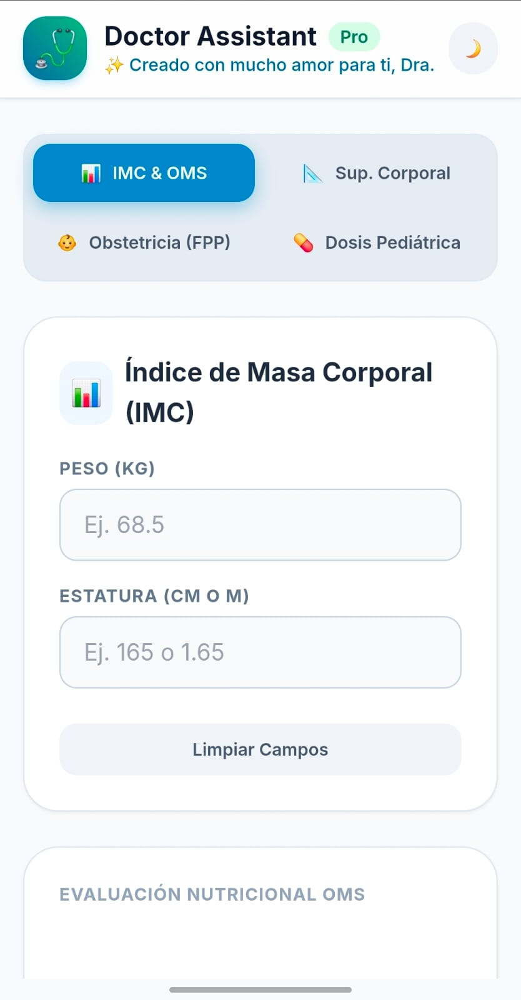

Proyectos Destacados

Medical Suite
Aplicación web con herramientas y calculadoras médicas (IMC, dosis pediátrica). Enfocada en la utilidad y experiencia del usuario para profesionales de la salud.
JavaScript
Web App
Ver detalles
Monitoreo Ambiental
Sistema integrado con hardware (Arduino) y sensores para el monitoreo en tiempo real de temperatura y parámetros físicos en aulas estudiantiles.
C++ / Arduino
Hardware
Ver detalles
Interfaces y UI
Creación de interfaces gráficas interactivas y material digital (como invitaciones), combinando diseño visual atractivo con maquetación web responsiva.
HTML/CSS
UI/UX
Ver detalles